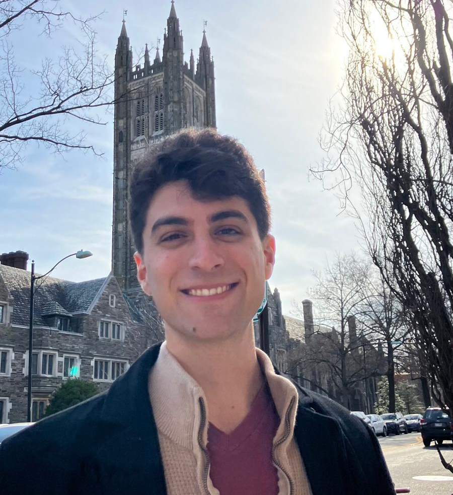

Gave a talk on grounded reinforcement learning for visual reasoning at the PLI Seminar.
Hi, I'm Gabe SarchI'm a Postdoctoral Research Fellow in Princeton Language and Intelligence (PLI) at Princeton University. I completed my Ph.D. at Carnegie Mellon University in Machine Learning (MLD & NI) in 2025. I was fortunate to be advised by Drs. Katerina Fragkiadaki and Mike Tarr. Previously, I held research positions at Microsoft Research and Yutori AI, and received the National Science Foundation Graduate Research Fellowship. |
 |
Human learning and reasoning are active processes. We move, probe, and explore to make sense of dynamic, multimodal environments. I aim to build agents that learn strategies generalizable to complex, novel tasks.
This comes in two parts: (i) reverse-engineering agentic intelligence in humans and animals, and (ii) developing algorithms for generalist agents that learn to reason and act from interactive, multimodal experience.
Some focus areas towards this goal:
- Grounded Visual Reasoning. ViGoRL, MICA
- Memory-Augmented Agents. ICAL, HELPER, TIDEE
- Characterizing Natural Intelligence. Brain Dissection, View Prediction Models, Beyond Fixation
News
Started a Postdoctoral Research Fellow position with Princeton Language and Intelligence (PLI) at Princeton University.
Serving on the AISTATS 2025 Program Committee.
Completed my Ph.D. in Machine Learning and Neural Computation at Carnegie Mellon University.
“Out of Sight, Not Out of Context? Egocentric Spatial Reasoning in VLMs Across Disjoint Frames” appearing at EMNLP 2025.
Released the ViGoRL preprint on grounded reinforcement learning for multimodal reasoning. Code, models, datasets are all open-source here.
“Reanimating Images using Neural Representations of Dynamic Stimuli” accepted as an oral presentation at CVPR 2025.
“Multimodal Interactive Contextualized Real World Task Assistance from a Single Demonstration” published in ACL Findings 2025.
“VLM Agents Generate Their Own Memories” received a NeurIPS 2024 Spotlight recognition.
Joined Yutori as Technical Staff (AI) to build multimodal model infrastructure through Dec 2024.
“Towards Unified 2D-3D Visual Scene Understanding Foundation Models” spotlighted at CVPR 2024.
Started a research internship at Microsoft Research working on the MICA real-time assistance system.
Gave an invited talk on task planning with LLMs at Carnegie Mellon’s Search-based Planning Laboratory.
Presented “Open-Ended Instructable Embodied Agents” at CMU Catalyst’s LLM Agents Seminar.
Completed an M.S. in Machine Learning Research at Carnegie Mellon University.
“HELPER-X: A Unified Instructable Embodied Agent” presented at the ICLR 2024 LLM Agents Workshop.
Won the Embodied AI Workshop Rearrangement Challenge at CVPR 2023.
“Open-Ended Instructable Embodied Agents with Memory-Augmented LLMs” published in EMNLP Findings 2023.
“Brain Dissection: fMRI-trained Networks Reveal Spatial Selectivity” accepted at NeurIPS 2023.
“3D View Prediction Models of the Dorsal Visual Stream” presented at CCN 2023.
“Beyond Fixation: detailed characterization of neural selectivity in free-viewing primates” published in Nature Communications 2023.
Delivered the brAIn Seminar talk “Spatial Processing During Natural Scene Viewing.”
Gave an invited lecture in CMU’s Biologically Intelligent Exploration course on evidence-based decision making.
Runner-up in the Amazon Alexa Prize SimBot Embodied Dialogue Challenge.
“TIDEE: Tidying Up Novel Rooms using Visuo-Semantic Common Sense Priors” accepted at ECCV 2022.
“Move to See Better: Self-Improving Embodied Object Detection” accepted at BMVC 2021.
Awarded the NSF Graduate Research Fellowship to support graduate research through 2025.
Began Ph.D. studies in Machine Learning and Neural Computation at Carnegie Mellon University.
Awarded the University of Rochester Center for Visual Science Research Fellowship.
Selected Publications
Grounded Reinforcement Learning for Visual ReasoningGH Sarch S Saha N Khandelwal A Jain MJ Tarr A Kumar K FragkiadakiNeurIPS 2025 |
 Paper
Paper
 Project Page
Project Page
 Code
Code
Grounding Task Assistance with Multimodal Cues from a Single DemonstrationGH Sarch B Kumaravel S Ravi V Vineet A WilsonACL 2025 findings |

|
Open-Ended Instructable Embodied Agents with Memory-Augmented Large Language ModelsGH Sarch Y Wu MJ Tarr K FragkiadakiEMNLP 2023 findingsüî•[NEW!] in ICLR 2024 Workshop on LLM Agents: HELPER-X achieves Few-Shot SoTA on 4 embodied AI benchmarks (ALFRED, TEACh, DialFRED, and the Tidy Task) using a single agent, with just simple modifications to the original HELPER. |

|
Brain Dissection: fMRI-trained Networks Reveal Spatial Selectivity in the Processing of Natural ImagesGH Sarch MJ Tarr K Fragkiadaki* L Wehbe*NeurIPS 2023 |

|

|
Move to See Better: Towards Self-Improving Embodied Object DetectionGH Sarch* Z Fang* A Jain* AW Harley K FragkiadakiBMVC 2021 |